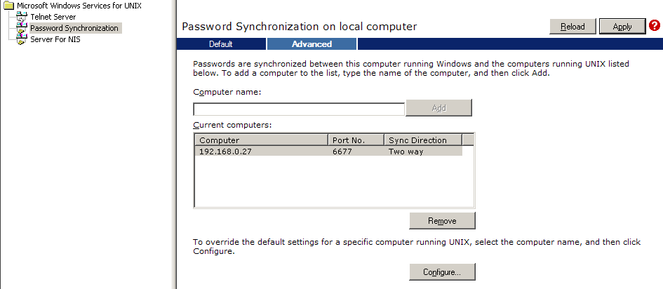

Mise en place d'une solution de Syncronisation entre ActiveDirectory et OpenLDAP
1 Introduction
Cette documentation est assez pousée techniquement, c'est pourquoi il faut un minimum de conaissances avant de l'attaquer. Je vous conseil de lire cette documentation d'abord.
En ce qui concerne l'authentification, on veut utiliser un annuaire OpenLDAP comme cache/backup d'un serveur Active Directory (AD). L'authentification s'effectuera à partir de différentes applications et machines de type Unix. Le but est également en cas de crash de l'AD de pouvoir continuer à s'authentifier.
Note : Parceque objectivement, en cas de crash voici à peu prêts les temps de réinstallation et restauration :
- Linux : ~30 min
- Windows : ~ 4 h
Le choix est donc vite fait, et cette solution tiens réellement la route. (Les pures Windoziens qui disent qu'un Windows crash jamais sortent !)
Certaines autres informations pourront être stockées localement dans OpenLDAP.
Afin de simplifier l'installation côté unix (linux ou solaris), Microsoft SFU est installé sur AD, ce qui permet de maintenir sur ce dernier les informations des comptes unix telles que les gig/uid/homedirectory,shell... (ceci va modifier le shéma de l'AD).
Pour d'accéder aux mots de passe utilisateurs contenu dans AD (unicodePwd) la connexion entre le serveur OpenLDAP et AD sera cryptée via SSL. C'est le seul moyen de pouvoir envoyer des requêtes sur AD qui touche à cet attribut. PS: Cela ne permet pas de le lire mais uniquement de le modifier.
Cette doc présentera l'installation pour la configuration la plus évolué. Celle-ci permet d'avoir un serveur openldap indépendant avec un contenu synchronisé de différentes manières : par un script en python pour tous les attributs de toutes les entrées, par ssod pour les mots de passe unix et samba, par pam pour les mots de passe unix et samba.
2 Installation
2.1 Serveur
Pour l'installation, nous allons le faire sur une Debian :
| |
apt-get install ldap-server ldap-client python-ldap |
Pour SSOD :
| |
apt-get install libpam-ldap |
Pour Samba :
| |
apt-get install libpam-smbpass libnss-ldap |
Lors de l'installation, il vous demandera quel mot de passe root vous souhaitez pour l'OpenLDAP.
ssod est un utilitaire écrit par microsoft et dont le code source est téléchargeable sur ces pages :
- http://www.google.fr/search?q=+ssod.tar.gz
- http://www.microsoft.com/windowsserver2003/R2/unixcomponents/idmu.mspx
Néanmoins, le code fourni dans ce fichier n'est pas portable et ne fonctionne pas sous un système en 64bits... J'ai été obligé de modifier ces sources pour le rendre portable.
2.2 Windows
Pour windows, il faut donc un serveur DNS, un AD de configuré, et le petit SFU qu'il vous faudra télécharger et installer.
Lors de l'installation, vous pouvez effectuer une installe personnalisée et cochez que :
- Password synchronisation
- NIS server
Puis lancez l'installation.
- Lancer ensuite l'utilitaire de configuration des services UNIX et configurez comme ceci :
{kind=link}
- Ajoutez ici votre serveur OpenLDAP :
 Cliquez ensuite apply.
{kind=link}
- Ensuite, si vous avez déjà un MASTER (comme le DELL1800 ici), connectez à l'utilitaire sur le master et ajoutez le. Sinon, si c'est ce serveur qui doit servir de master, ajoutez le dans cette MMC :
{kind=link}
Ensuite il vous faudra rebooter et ce sera bon.
2.3 Clients
- REDIRECTION Modèle:LDAP Clients installation Debian
3 Configuration
3.1 Serveur
3.1.1 slapd.conf
Pour les informations suivantes
Editez le fichier de configuration /etc/ldap/slapd.conf et ajoutez ces lignes :
| |
# Schema and objectClass definitions include /etc/ldap/schema/core.schema include /etc/ldap/schema/cosine.schema include /etc/ldap/schema/nis.schema include /etc/ldap/schema/inetorgperson.schema include /etc/ldap/schema/microsoft.schema include /etc/ldap/schema/microsoft.sfu.schema include /etc/ldap/schema/microsoft.exchange.schema # Pour samba include /etc/ldap/schema/samba.schema |
Nous avons donc ici les schemas pour qu'OpenLDAP puisse reconnaitre les différents attributs Microsoft. On y met également Samba (car nous voulons également intégrer samba à OpenLDAP.
Le shéma Samba se trouve dans /usr/share/doc/samba-doc/examples/LDAP et est à copier dans /etc/ldap/schema, mais il faut auparavant installer un package pour Samba :
| |
apt-get install samba-doc cp /usr/share/doc/samba-doc/examples/LDAP/samba.schema /etc/ldap/schema/samba.schema |
On localise où sera stockée la syncro de la base AD :
| |
# Where the database file are physically stored for database #1 directory "/var/lib/ldap/copy-ad" |
On ajoute des index sur les champs uid,sn,cn,gid... pour accélérer les recherches par rapport à ces champs :
| |
# Indexing options for database #1 index objectClass eq index cn,sn,uid,mail pres,eq,sub index mailnickname,userprincipalname,proxyaddresses pres,eq,sub |
Maintenant configurez votre domaine AD ainsi que le mot de passe crypté (voir documentation ldap basique) :
| |
# The base of your directory in database #1
suffix "dc=openldap,dc=mydomain,dc=local"
# rootdn directive for specifying a superuser on the database. This is needed
# for syncrepl.
rootdn "cn=admin,dc=openldap,dc=mydomain,dc=local"
rootpw {SSHA}V2c83+XHO/DNrUjeNjyTwAA9W+yKm/4h
access to attrs=userPassword,shadowLastChange
by dn="cn=admin,dc=mydomain,dc=local" write
by anonymous auth
by self write
by * none
access to *
by dn="cn=admin,dc=openldap,dc=mydomain,dc=local" write
by * read
|
Ce qui donne quelquechose comme ceci :
| |
include /etc/ldap/schema/core.schema
include /etc/ldap/schema/cosine.schema
include /etc/ldap/schema/nis.schema
include /etc/ldap/schema/inetorgperson.schema
include /etc/ldap/schema/microsoft.schema
include /etc/ldap/schema/microsoft.sfu.schema
include /etc/ldap/schema/microsoft.exchange.schema
include /etc/ldap/schema/samba.schema
pidfile /var/run/slapd/slapd.pid
argsfile /var/run/slapd/slapd.args
loglevel 0
modulepath /usr/lib/ldap
moduleload back_bdb
sizelimit 500
tool-threads 1
backend bdb
checkpoint 512 30
database bdb
suffix "dc=openldap,dc=mydomain,dc=local"
rootdn rootdn "cn=admin,dc=openldap,dc=mydomain,dc=local"
rootpw {SSHA}V2c83+XHO/DNrUjeNjyTwAA9W+yKm/4h
directory "/var/lib/ldap/copy-ad"
dbconfig set_cachesize 0 2097152 0
dbconfig set_lk_max_objects 1500
dbconfig set_lk_max_locks 1500
dbconfig set_lk_max_lockers 1500
index objectClass eq
index cn,sn,uid,mail pres,eq,sub
index mailnickname,userprincipalname,proxyaddresses pres,eq,sub
lastmod on
access to attrs=userPassword,shadowLastChange
by '''dn="cn=admin,dc=openldap,dc=mydomain,dc=local" write
by anonymous auth
by self write
by * none
access to dn.base="" by * read
access to *
by dn="cn=admin,dc=openldap,dc=mydomain,dc=local" write
by * read |
3.1.2 slapd.conf proxy
Dans le cas où nous voulons que notre serveur LDAP serve de proxy, il faut loader le module back_meta :
| |
# Where the dynamically loaded modules are stored modulepath /usr/lib/ldap moduleload back_bdb moduleload back_meta |
Et configurer comme il faut pour contenir les informations du serveur Active Directory :
| |
#######################################################################
database meta
suffix "dc=ad,dc=mydomain,dc=local"
uri "ldap://192.168.0.30/dc=ad,dc=mydomain,dc=local"
suffixmassage "dc=ad,dc=mydomain,dc=local" "dc=mydomain,dc=local"
rootdn "cn=admin,dc=ad,DC=mydomain,DC=local" # compte admin locale
rootpw {SSHA}V2c83+XHO/DNrUjeNjyTwAA9W+yKm/4h # mot de passe local
#acl-authcDN "CN=Administrateur,CN=Users,DC=mydomain,DC=local"
#acl-passwd {SSHA}V2c83+XHO/DNrUjeNjyTwAA9W+yKm/4h
access to attrs=userPassword,shadowLastChange
by dn="CN=Administrateur,CN=Users,DC=ad,DC=mydomain,DC=local" write
by anonymous auth
by self write
by * none
access to dn.base="" by * read
# The admin dn has full write access, everyone else
# can read everything.
access to *
by dn="CN=Administrateur,CN=Users,DC=ad,DC=mydomain,DC=local" write
by * read
# Save the time that the entry gets modified, for database #1
lastmod on
cachesize 20
directory /var/lib/ldap/real-ad
index objectClass eq
index cn,sn,uid,mail pres,eq,sub
|
3.1.3 Schemas
Nous allons copier les schemas au bon endroit. Téléchargez l'archive :
Schemas Microsoft
Maintenant on décompresse :
| |
mv Microsoft_shema.tgz /etc/ldap/schema cd /etc/ldap/schema tar -xzvf Microsoft_shema.tgz rm Microsoft_shema.tgz |
On va créer les dossiers assosiés à l'endroit où va être stocker la base AD :
| |
mkdir -p /var/lib/ldap/copy-ad chown -Rf openldap. /var/lib/ldap/copy-ad |
Et maintenant on peut redémarrer le serveur ldap :
| |
/etc/init.d/slapd restart |
3.1.4 SSOD
L'intérêt de ssod réside dans le fait que la synchronisation des mots de passe est effectuée en temps réel.
Cette synchronisation peut s'effectuer via pam, ce qui permet de mettre à jour n'importe quel backend ou type de mot de passe (ldap, shadow, samba, kerberos, ...)
Ce dernier point est très intéressant pour la synchronisation des mots de passe pour les serveurs samba qui utilisent leurs propres attributs LDAP pour stocker les mots de passe.
On peut en effet utiliser conjointement pam_smbpass et ssod pour remplir les attributs sambaNTPassword, sambaLMPassword et autres attributs associés lorsqu'un mot de passe est modifié sur le serveur AD.
Compilation de ssod L'utilitaire ssod fournit par microsoft ne fonctionne pas en 64 bits. J'ai donc du modifier le code source et c'est cette version modifiée qu'il faut utiliser.
3.1.4.1 Configuration
Pour compiler ssod, les packages g++ et libpam0g-dev doivent être installés :
| |
apt-get install g++ libpam0g-dev |
Récupérer ces sources disponibles ici :
| |
unzip ssod-src.zip cd sfu/tripldes make -f make3des.debian clean make -f make3des.debian cd ../ssod make -f makessod.debian clean make -f makessod.debian |
On obtient un binaire dans bin/ssod.l52.
3.1.4.2 Installation
Copier le binaire obtenu après la compilation vers /usr/bin/ssod sur le serveur où est installé openldap.
Télécharger le fichier ssod-conf.tgz dans /tmp et le décompresser en étant dans le répertoire racine:
| |
cd / tar zxvf /tmp/ssod-conf.tgz |
Ceci installera le fichier de de démarrage et d'arrêt dans /etc/init.d, les liens correspondants aux différents runlevel dans /etc/rc?.d et finalement le fichier de configuration du daemon dans /etc/sso.conf.
Les différentes options possibles sont disponible sur cette page :
http://technet2.microsoft.com/windowsserver/en/library/3f2ac52d-e9b3-4c8a-bc1d-a4e3adde91191033.mspx?mfr=true
Par défaut, la configuration est la suivante:
SYNC_HOSTS=(192.168.0.30) FILE_PATH=/etc ENCRYPT_KEY=ABCDZ#efgh$12345 CASE_IGNORE_NAME=0 USE_NIS=0 USE_SHADOW=0 TEMP_FILE_PATH=/tmp SYNC_USERS=ALL SYNC_RETRIES=5 SYNC_DELAY=0 PORT_NUMBER=6677 NIS_UPDATE_PATH=bidon
- SYNC_HOSTS doit contenir le nom ou l'adresse IP du serveur AD avec lequel on veut se synchroniser.
- ENCRYPT_KEY doit être identique à ce qui est indiquer dans la configuration de SFU sur le serveur AD.
- PORT_NUMBER doit contenir le n° de port utilisé par SFU sur le serveur AD.
Avec ce fichier de configuration, ssod est configuré pour mettre à jour les mots de passe en utilisant PAM. Il faut donc créer un fichier correspondant au service ssod dans le répertoire de configuration de pam (/etc/pam.d). A priori, ce fichier est une copie de /etc/pam.d/passwd. Donc :
| |
cp /etc/pam.d/passwd /etc/pam.d/ssod |
/etc/pam.d/ssod contient normalement une directive d'include du fichier /etc/pam.d/common-password-ldap. Le contenu de ce dernier varie selon les fonctionalité voulues. À Priori il doit faire référence aux modules pam-ldap et éventuellement pam-smbpass.
Une fois l'installation de ssod et des différents modules pam nécessaires à votre configuration, vous pouvez vérifier le bon fonctionnement du daemon ssod en modifiant un mot de passe sous AD et en regarant le fichier /var/log/auth.log sur le serveur où tourne ssod. Vous devez voir apparaître une ligne du type :
Successfully updated password via PAM User: dummyuser
pour chaque mot de passe modifié.
3.1.4.3 Configuration libpam-ldap et libnss-pam
Se reporter au chapitre du même nom dans la partie configuration client en ce qui concerne les fichiers /etc/nsswitch.conf, /etc/libnss-ldap.* et /etc/pam_ldap.conf
3.1.4.4 Configuration/utilisation de libpam-smbpass
Pour que ce module fonctionne, il faut obligatoirement configurer libnss-pam, sinon l'exécution de pam-smbpass.so se finira par un core dump :-( . Il faut en effet que ce module retrouve les informations des utilisateurs et/ou des groupes qui se trouvent dans l'annuaire ldap.
Le fichier /etc/samba/smb.conf doit être configuré pour utiliser le backend ldap. Voir le chapitre se rapportant à la configuration de samba.
Libpam-smbpass permet de s'authentifier en utilisant les attributs sambaNTPassword et/ou sambaLMPassword. Il permet aussi de mettre à jour ces attributs lorsque le mot de passe est changé ou lorsqu'un utilisateur se loggue après avoir été authentifié par un module tierce (pam_ldap par exemple). Ce sont ces deux dernières fonctionalités qui nous intéressent particulièrement. En effet, pour pouvoir s'authentifier auprès de serveurs samba, ces attributs doivent être remplis et c'est à priori les seules manières de les remplir.
Pour synchroniser les mots de passe samba à partir de ceux contenu dans l'annuaire LDAP lorsqu'un utilisateur s'authentifie, il faut modifier le fichier /etc/pam.d/common-auth-ldap. Celui ci doit contenir :
| |
auth required pam_nologin.so auth sufficient pam_unix.so nullok_secure auth optional pam_smbpass.so migrate use_first_pass auth sufficient pam_ldap.so use_first_pass auth required pam_deny.so |
Pour modifier les mots de passe samba lorsqu'un utilisateur modifie son mot de passe sur AD ou sur une machine unix, il faut modifier le fichier /etc/pam.d/common-password-ldap. Celui-ci doit contenir :
| |
password required pam_smbpass.so migrate password sufficient pam_ldap.so try_first_pass password sufficient pam_unix.so try_first_pass nullok obscure min=4 max=8 md5 password required pam_deny.so |
3.1.5 Script de synchronisation
Maintenant au niveau de la crontab, on va rajouter un petit script qui va nous permettre de faire la synchro. Editez le script et modifiez le selon vos besoins :
Script d'import AD
Mettez l'archive du script dans un endroit et décompressez le :
| |
mv Ad_import.tgz /etc/scripts/ cd /etc/scripts/ tar -xzvf Ad_import.tgz chmod 755 ad_import.py rm Ad_import.tgz |
Vous pouvez éditer le script et modifier les variables suivantes :
- LOGLEVEL : contient un entier. Plus l'entier est grand, plus le script est verbeux
- GENLDIF : 0 ou 1. Si c'est 1, le script génère un fichier LDIF contenant les entrées LDAP modifiées et destinée au serveur OpenLDAP
- SYNCHRONIZE : 0 ou 1. Si c'est 1, le script modifie directement les entrées sur le serveur OpenLDAP
- LOGSTDOUT : 0 ou 1. Si c'est 1, le script affiche ses messages sur la sortie standard.
- FULLSYNC: 0 ou 1. Si c'est 1, le script récupère toutes les entrées contenues dans AD, sinon il récupère uniquement celles qui ont été modifiées depuis la dernière synchronisation (incrémentiel). Si vous changez de serveur AD source (ou faire une syncro complète), vous devez soit mettre cette variable à 1, soit mettre à 0 l'attribut uSNChanged du DN de base dans votre annuaire OpenLDAP.
- src* : les différents paramètres pour se connecter au serveur source.
- srcuri : URI du serveur source
- srcadmin: DN de l'utilisateur servant à la réplication
- srcpassword: son mot de passe
- srcbasedn: la base de la hiérarchie à synchroniser.
- dst*: idem ci-dessus mais pour le serveur cible
- dstsamba: où stocker les infos concernant le domaine samba.
Ensuite on le rajoute dans la crontab et on le lance toutes les 10 min :
| |
*/10 * * * * python /etc/scripts/ad_import.py |
3.2 Clients
D'une manière générale, les clients unix peuvent s'authentifier en utilisant les informations contenues dans l'annuaire LDAP via PAM et NSS. Il sufft donc d'installer et de configurer ces composants sur les différents systèmes.
3.2.1 Debian
Vous avez le choix d'installer libpam-ldapd ou libpam-ldap. libpam-ldapd est plus récent et évite quelques bugs vu sur libpam-ldap. A vous de voir ce que vous voulez :-)
3.2.1.1 libpam-ldapd
Si vous optez pour libnss-ldapd, alors vous n'avez simplement qu'a installer ceci et répondre aux questions.
| |
aptitude install libnss-ldapd |
3.2.1.2 libpam-ldap
Si vous avez choisi d'installer libpam-ldap à la place de libpam-ldapd, vous allez devoir faire ceci à la main.
Par défaut, debian créé deux fichiers de configuration différents pour libpam-ldap et libnss-ldap. Ceci est inutile vu que ces deux fichiers vont contenir la même chose. Il faut supprimer les fichiers de configuration libpam-ldap et créer des liens depuis ceux de libnss-ldap ver ceux de libpam-ldap:
| |
rm /etc/pam_ldap.* ln -s /etc/libnss-ldap.conf /etc/pam_ldap.conf ln -s /etc/libnss-ldap.secret /etc/pam_ldap.secret |
Editer /etc/libnss-ldap.conf et y mettre (il ne doit contenir que ces lignes) :
| |
uri ldap://ldap.mydomain.local/ base dc=openldap,dc=mydomain,dc=local ldap_version 3 rootbinddn cn=admin,dc=openldap,dc=mydomain,dc=local scope sub nss_paged_results yes pagesize 1000 nss_base_passwd dc=openldap,dc=mydomain,dc=local?sub?&(&(objectClass=posixAccount)(!(objectClass=computer))) nss_base_shadow dc=openldap,dc=mydomain,dc=local?sub |
Dans /etc/libnss-ldap.secret, indiquer le mot de passe de l'utilisateur indiquer sur la ligne rootdn du fichier /etc/libnss-ldap.conf.
Vous devez ensuite modifier le fichier /etc/nsswitch.conf afin d'y indiquer que la recherche se fera entre autre dans l'annuaire ldap pour les différents services. Cela donne par exemple :
| |
passwd: files ldap group: files ldap shadow: files ldap hosts: files dns networks: files protocols: db files services: db files ethers: db files rpc: db files netgroup: nis |
3.2.1.3 libpam-ldapd et libpam-ldap
Enfin, il faut modifier les chaines pam pour que celles-ci permettent l'authentification via l'annuaire ldap. Ceci se fait en copiant les différents fichier /etc/pam.d/common-* vers /etc/pam.d/common-*-ldap :
| |
cd /etc/pam.d
cp common-account{,-ldap}
cp common-auth{,-ldap}
cp common-pammount{,-ldap}
cp common-password{,-ldap}
cp common-session{,-ldap}
|
Editer les différents fichiers /etc/pam.d/common-*-ldap pour avoir :
- /etc/pam.d/common-account-ldap :
| |
account sufficient pam_ldap.so account sufficient pam_unix.so use_first_pass account required pam_deny.so |
- /etc/pam.d/common-auth-ldap
| |
auth required pam_nologin.so auth sufficient pam_unix.so nullok_secure auth optional pam_mount.so debug use_first_pass auth optional pam_smbpass.so migrate use_first_pass auth sufficient pam_ldap.so use_first_pass auth required pam_deny.so |
- /etc/pam.d/common-password-ldap
| |
password required pam_smbpass.so migrate password sufficient pam_ldap.so try_first_pass password sufficient pam_unix.so try_first_pass nullok obscure min=4 max=8 md5 password required pam_deny.so |
- /etc/pam.d/common-session-ldap
| |
session required pam_unix.so session required pam_ldap.so session required pam_mkhomedir.so skel=/etc/skel/ umask=0022 session optional pam_mount.so |
- /etc/pam.d/common-session
| |
session required pam_mkhomedir.so skel=/etc/skel/ umask=0022 session sufficient pam_ldap.so session required pam_unix.so |
Une fois ces fichiers common-*-ldap créés, on peut éditer les fichiers des différents services pour lesquels on veut autoriser l'authentification par ldap... Si par exemple on veut permettre aux utilisateurs contenus dans l'annuaire LDAP de se connecter en ssh sur la machine, on edite le fichier /etc/pam.d/ssh et on remplace les common-qqc en common-qqc-ldap.
Pour l'automount des partitions en fonction de l'utilisateur, éditez le fichier /etc/security/pam_mount.conf :
| |
volume * cifs 192.168.0.30 &$ /media/windows/& sfu - - |
Si vous ne pouvez toujours pas vous connecter, redémarrer le service nscd :
| |
/etc/init.d/nscd restart |
La commande suivante doit fonctionner correctement :
| |
getent passwd mon_user |
3.2.1.4 Autoriser un groupe LDAP en particulier
Une des méthodes courantes est de n'autoriser qu'un ou certains groupes du LDAP à accéder à une machine. Pour celà, il faudra que les groupes aient comme attribut posixGroup nommé login.
3.2.1.4.1 Debian
Installez libpam-modules si ce n'est pas déjà fait :
| |
aptitude install libpam-modules |
Ensuite ajoutez cette ligne dans le fichier /etc/pam.d/common-auth :
| |
... auth required pam_access.so |
3.2.1.4.2 Red Hat
Installez ce package :
| |
yum install pam-devel |
Et ajoutez cette ligne sur le service que vous souhaitez (sshd par exemple), la restriction :
| |
auth include password-auth
account required pam_access.soaccount required pam_nologin.so |
3.2.1.4.3 Configuration
Celà va nous permettre d'utiliser le fichier /etc/security/access.conf. Et voici le genre de ligne qu'il faut rajouter :
| |
... # disallow all except people in the login group and root -:ALL EXCEPT root (sysadmin):ALL EXCEPT LOCAL |
Ceci permet de désactiver tous les comptes sauf :
- root
- Le groupe sysadmin (pas l'utilisateur grâce aux parenthèses)
- LOCAL : les utilisateurs locaux
3.2.2 Red Hat
Il existe 2 méthodes. La première passe par un script Red Hat qui va nous faire tout pour nous, tandis que la deuxième est la solution manuelle.
3.2.2.1 Méthode 1
Pour configurer PAM avec LDAP, utilisez cette commande et adaptez la à vos besoins :
| |
authconfig --enableldap --enableldapauth --ldapserver=ldap://openldap-server.deimos.fr:389 --ldapbasedn="dc=openldap,dc=deimos,dc=fr" --enableldaptls --ldaploadcacer=http://serveur-web/deimosfr.crt --enablemkhomedir --update |
- --ldapserver : rentrez l'adresse de votre serveur web
- --ldapbasedn : le DN de votre serveur
- --enableldaptls : si vous utilisez des connections LDAP sécurisées
- --ldaploadcacer : le certificat à utiliser (si vous n'avez pas moyen de le récupérer de cette façon, regardez la procédure un peu plus bas)
ou une version sans ssl/tls :
| |
authconfig --enableldap --enableldapauth --disablenis --disableshadow --enablecache --passalgo=sha512 --disableldaptls --disableldapstarttls --disablesssdauth --enablemkhomedir --enablepamaccess --enablecachecreds --enableforcelegacy --disablefingerprint --ldapserver=192.168.0.1 --ldapbasedn=dc=openldap,dc=deimos,dc=fr --updateall |
Pour récupérer le certificat ssl demandé plus haut, voici une solution :
| |
> openssl s_client -connect openldap-server.deimos.fr:636CONNECTED(00000003) depth=0 C = FR, ST = IDF, L = Paris, O = DEIMOS, CN = openldap-server.deimos.fr, emailAddress = deimos@deimos.fr verify error:num=18:self signed certificate verify return:1 depth=0 C = FR, ST = IDF, L = Paris, O = DEIMOS, CN = openldap-server.deimos.fr, emailAddress = deimos@deimos.fr verify return:1 --- Certificate chain 0 s:/C=FR/ST=IDF/L=Paris/O=DEIMOS/CN=openldap-server.deimos.fr/emailAddress=deimos@deimos.fr i:/C=FR/ST=IDF/L=Paris/O=DEIMOS/CN=openldap-server.deimos.fr/emailAddress=deimos@deimos.fr --- Server certificate -----BEGIN CERTIFICATE-----MIIDpTCCAw6gAwIBAgIJAJJUJLhNM1/XMA0GCSqGSIb3DQEBBQUAMIGUMQswCQYDVQQGEwJGUjEMMAoGA1UECBMDSURGMQ4wDAYDVQQHEwVQYXJpczEPMA0GA1UEChMGVUxMSU5LMREwDwYDVQQLEwh1bHN5c25ldDEcMBoGA1UEAxMTdGFzbWFuaWEMdWxsaW5rLmxhbjElMCMGCSqGSIb3DQEJARYWaW503XJuYWwtaXRAdWxsaW5rLmNvbTAeFw0xMTEyMDUxMjQzMzVaFw0yMTEyMDIxMjQzMzVaMIGUMQswCQYDVQQGEwJGUjEMMAoGA1UECBMDSURGMR4wDAYDVQQHEwVQYXJpczEPMA0GA1UEChMGVUxMSU5LMREwDwYDVQQLEwh1bHN5c25ldDEcMBoGA1UEAxMTdGFzbWFuaWEudWxsaW5rLmxhbjElMCMGCSqGSIb3DQEJARYWaW50ZXJuYWwtaXRAdWxsaW5rLmNvbTCBnzANBgkqhkiG9w0BAQEFAAOBjQAwgYkCgYEA4QoXFn39LhMW7mlA9r3NOX6iTHCCSlZjVQi0mQ5kBVysN8KMFfC0E4vOeG1Z11AYwW7xCOb4Pl+LgfgfdgfgfdJIn92LX0meJcsgWKOhqVAsZNkWn2ss8oDw3t5NEOjKFZ5BKVR2fL4Yj23DmFOAwew5PR5xhxGV5LJ9VErSKs0CAwEAAaOB/DCB+TAdBgNVHQ4EFgQUn5Ig2hFtROXcG3vxux7izNqcUd4wgckGA1UdIwSBwTCBvoAUn5Ig2hFtROXcG3vxux7izNqcUd6hgZqkgZcwgZQxCzAJBgNVBAYTAkZSMQwwCgYDVQQIEwNJREYxDjAMBgNVBAcTBVBhcmlzMQ8wDQYDVQQKEwZVTExJTksxETAPBgNVBAsTCHVsc3lzbmV0MRwwGgYDVQQDExN0YXNtYW5pYS51bGxpbmsubGFuMSUwIwYJKoZIhvcNAQkBFhZpbnRlcm5hbC1pdEB1bGxpbmsuY29tggkAklQkuE0zX9cwDAYCVR0TBAUwAwEB/zANBgkqhkiG9w0BAQUFAAOBgQAbjjAbcBezdKyq+Tlf3/DURW0BJhHKyY7UW7L39m/KZRIB2lbgFjslrAL4yNnFgipJ6aKlJFfVBYEu7MhKH2pJZBYFpzuHOdKvDq+Kmn/wGvxeOvzh1GzQPGhQv4cClm2PJNMh/jrKZWNzqyLWYtWAoLu6N6gMER1Bd1Z5uzHl3A==-----END CERTIFICATE----- subject=/C=FR/ST=IDF/L=Paris/O=DEIMOS/CN=openldap-server.deimos.fr/emailAddress=deimos@deimos.fr issuer=/C=FR/ST=IDF/L=Paris/O=DEIMOS/CN=openldap-server.deimos.fr/emailAddress=deimos@deimos.fr --- No client certificate CA names sent --- SSL handshake has read 1291 bytes and written 311 bytes --- New, TLSv1/SSLv3, Cipher is AES256-SHA Server public key is 1024 bit Secure Renegotiation IS NOT supported Compression: NONE Expansion: NONE SSL-Session: Protocol : TLSv1 Cipher : AES256-SHA Session-ID: 91E6398F6DE9FBDC1B7EBDF890FE818B09EB79555C9FC1CF64EDC284F7A23B2A Session-ID-ctx: Master-Key: 51408932336792F4E8F5339BD12F312005022A4B20E6A5FBC56239BC0DD514344449531973B9A8395B1E799196D8F411 Key-Arg : None Krb5 Principal: None PSK identity: None PSK identity hint: None Start Time: 1327491823 Timeout : 300 (sec) Verify return code: 18 (self signed certificate) --- |
Dans le cas ou le certificat est récupérer de la manière manuelle, copiez le dans /etc/openldap/cacerts/ldap.crt, puis exécutez la commande suivante :
| |
cacertdir_rehash /etc/openldap/cacerts |
3.2.2.2 Méthode 2
Modifier /etc/ldap.conf. Ce fichier est l'équivalent de /etc/libnss_pam.conf sous debian. Vous pouvez donc y mettre la même chose.
Modifier le fichier /etc/pam.d/system_auth : c'est l'équivalent des différents common-* sous debian. Cela donne par exemple:
| |
auth required /lib/security/$ISA/pam_env.so auth sufficient /lib/security/$ISA/pam_unix.so likeauth nullok auth sufficient /lib/security/$ISA/pam_ldap.so use_first_pass auth required /lib/security/$ISA/pam_deny.so account sufficient /lib/security/$ISA/pam_unix.so account sufficient /lib/security/$ISA/pam_ldap.so account sufficient /lib/security/$ISA/pam_succeed_if.so uid < 100 quiet account required /lib/security/$ISA/pam_permit.so password requisite /lib/security/$ISA/pam_cracklib.so retry=3 password sufficient /lib/security/$ISA/pam_unix.so nullok use_authtok md5 shadow password required /lib/security/$ISA/pam_deny.so session optional /lib/security/$ISA/pam_mkhomedir.so skel=/etc/skel/ umask=0077 session required /lib/security/$ISA/pam_limits.so session required /lib/security/$ISA/pam_unix.so |
Comme sur debian, il faut également modifier le fichier /etc/nsswitch.conf.
3.2.3 Forcer un shell au login
Si vous avez une authentification de pam via LDAP, il est possible de forcer un shell en particulier au login. Il va donc overrider les informations envoyées par NSS et les remplacer par le shell souhaité. Nous allons utiliser ici lshell pour toutes les personnes se connectant via LDAP :
| |
nss_override_attribute_value loginShell /usr/bin/lshell |
3.2.4 Solaris
- Configurer le fichier /etc/pam.conf :
Pour chaque ligne :
| |
service auth required pam_unix_auth.so.1 |
remplacer "required" par "sufficient" et ajouter derrière la ligne :
| |
service auth sufficient pam_ldap.so.1 try_first_pass |
Ce qui doit donner quelquechose comme ceci :
| |
# #ident "@(#)pam.conf 1.28 04/04/21 SMI" # # Copyright 2004 Sun Microsystems, Inc. All rights reserved. # Use is subject to license terms. # # PAM configuration # # Unless explicitly defined, all services use the modules # defined in the "other" section. # # Modules are defined with relative pathnames, i.e., they are # relative to /usr/lib/security/$ISA. Absolute path names, as # present in this file in previous releases are still acceptable. # # Authentication management # # login service (explicit because of pam_dial_auth) # login auth requisite pam_authtok_get.so.1 login auth required pam_dhkeys.so.1 login auth required pam_unix_cred.so.1 login auth sufficient pam_ldap.so.1 try_first_pass login auth sufficient pam_unix_auth.so.1 login auth required pam_dial_auth.so.1 # # rlogin service (explicit because of pam_rhost_auth) # rlogin auth sufficient pam_rhosts_auth.so.1 rlogin auth requisite pam_authtok_get.so.1 rlogin auth required pam_dhkeys.so.1 rlogin auth required pam_unix_cred.so.1 rlogin auth sufficient pam_ldap.so.1 try_first_pass rlogin auth sufficient pam_unix_auth.so.1 # # Kerberized rlogin service # krlogin auth required pam_unix_cred.so.1 krlogin auth binding pam_krb5.so.1 krlogin auth sufficient pam_ldap.so.1 krlogin auth sufficient pam_unix_auth.so.1 # # rsh service (explicit because of pam_rhost_auth, # and pam_unix_auth for meaningful pam_setcred) # rsh auth sufficient pam_rhosts_auth.so.1 rsh auth required pam_unix_cred.so.1 # # Kerberized rsh service # krsh auth required pam_unix_cred.so.1 krsh auth binding pam_krb5.so.1 krsh auth sufficient pam_ldap.so.1 krsh auth sufficient pam_unix_auth.so.1 # # Kerberized telnet service # ktelnet auth required pam_unix_cred.so.1 ktelnet auth binding pam_krb5.so.1 ktelnet auth sufficient pam_ldap.so.1 ktelnet auth sufficient pam_unix_auth.so.1 # # PPP service (explicit because of pam_dial_auth) # ppp auth requisite pam_authtok_get.so.1 ppp auth required pam_dhkeys.so.1 ppp auth required pam_unix_cred.so.1 ppp auth sufficient pam_ldap.so.1 ppp auth sufficient pam_unix_auth.so.1 ppp auth required pam_dial_auth.so.1 # # Default definitions for Authentication management # Used when service name is not explicitly mentioned for authentication # other auth requisite pam_authtok_get.so.1 other auth required pam_dhkeys.so.1 other auth required pam_unix_cred.so.1 other auth sufficient pam_ldap.so.1 other auth sufficient pam_unix_auth.so.1 # # passwd command (explicit because of a different authentication module) # passwd auth required pam_passwd_auth.so.1 # # cron service (explicit because of non-usage of pam_roles.so.1) # cron account required pam_unix_account.so.1 # # Default definition for Account management # Used when service name is not explicitly mentioned for account management # other account requisite pam_roles.so.1 other account required pam_unix_account.so.1 # # Default definition for Session management # Used when service name is not explicitly mentioned for session management # other session required pam_unix_session.so.1 # # Default definition for Password management # Used when service name is not explicitly mentioned for password management # other password required pam_dhkeys.so.1 other password requisite pam_authtok_get.so.1 other password requisite pam_authtok_check.so.1 other password required pam_authtok_store.so.1 # # Support for Kerberos V5 authentication and example configurations can # be found in the pam_krb5(5) man page under the "EXAMPLES" section. # |
- Configurer le fichier /etc/nsswitch.ldap
Laisser "ldap" uniquement là où c'est utile : pour le moment sur les lignes passwd: et group:.
Pour le reste, mettre le contenu du fichier /etc/nsswitch.dns.
Ce qui donne :
| |
# # Copyright 2006 Sun Microsystems, Inc. All rights reserved. # Use is subject to license terms. # # # /etc/nsswitch.dns: # # An example file that could be copied over to /etc/nsswitch.conf; it uses # DNS for hosts lookups, otherwise it does not use any other naming service. # # "hosts:" and "services:" in this file are used only if the # /etc/netconfig file has a "-" for nametoaddr_libs of "inet" transports. # DNS service expects that an instance of svc:/network/dns/client be # enabled and online. passwd: files ldap group: files ldap # You must also set up the /etc/resolv.conf file for DNS name # server lookup. See resolv.conf(4). hosts: files dns # Note that IPv4 addresses are searched for in all of the ipnodes databases # before searching the hosts databases. ipnodes: files dns networks: files protocols: files rpc: files ethers: files netmasks: files bootparams: files publickey: files # At present there isn't a 'files' backend for netgroup; the system will # figure it out pretty quickly, and won't use netgroups at all. netgroup: files automount: files aliases: files services: files printers: user files auth_attr: files prof_attr: files project: files tnrhtp: files tnrhdb: files |
Une fois que cela est fait, nous allons pouvoir mettre en place la configuration. Attention : si vous êtes en environnement cluster, adapatez à la conf initiale ! :
| |
cp /etc/nsswitch.ldap /etc/nsswitch.conf |
- Lancer la configuration du client ldap
Il suffit de taper la commande :
| |
ldapclient manual -v -a authenticationMethod=simple -a proxyDN=cn=admin,dc=openldap,dc=mydomain,dc=local -aproxyPassword=bidon -a defaultSearchBase=dc=openldap,dc=mydomain,dc=local -a defaultServerList=ldap.mydomain.local -a serviceSearchDescriptor=passwd:dc=openldap,dc=mydomain,dc=local?sub -a serviceSearchDescriptor=shadow:dc=openldap,dc=mydomain,dc=local?sub -a serviceSearchDescriptor=group:dc=openldap,dc=mydomain,dc=local?sub -a serviceAuthenticationMethod=pam_ldap:simple<nowiki>=</nowiki> |
Attention : il semble que la commande ldapclient soit buggée et nécéssite les paramètres proxyDN et proxyPassword même s'ils sont inutilisés ! (et même s'ils contiennent n'importe quoi)
- Attention au répertoire home, il faut configurer /etc/auto_home (http://www.solaris-fr.org/home/docs/base/utilisateurs). Ce qui donne pour ma part :
| |
# # Copyright 2003 Sun Microsystems, Inc. All rights reserved. # Use is subject to license terms. # # ident "@(#)auto_home 1.6 03/04/28 SMI" # # Home directory map for automounter # +auto_home * localhost:/export/home/& |
Au cas où vous voudriez créer automatiquement le home directory, vous devez effectuer un portage du pam_mkhomedir de linux :
- http://mega.ist.utl.pt/~filipe/pam_mkhomedir-sol/?C=D;O=A
- http://www.keutel.de/pam_mkhomedir/index.html
Une bonne idée serait aussi de monter automatiquement le home depuis un serveur nfs.
Il faut que les comptes utilisateurs dans l'annuaire LDAP aient dans leur liste d 'objectClass la classe « shadowAccount » pour pouvoir être pris en compte par solaris.
4 Ressources
Documentation Authentification avec Linux
Using Kerberos to Authenticate a Solaris 10 OS LDAP Client With Microsoft Active Directory